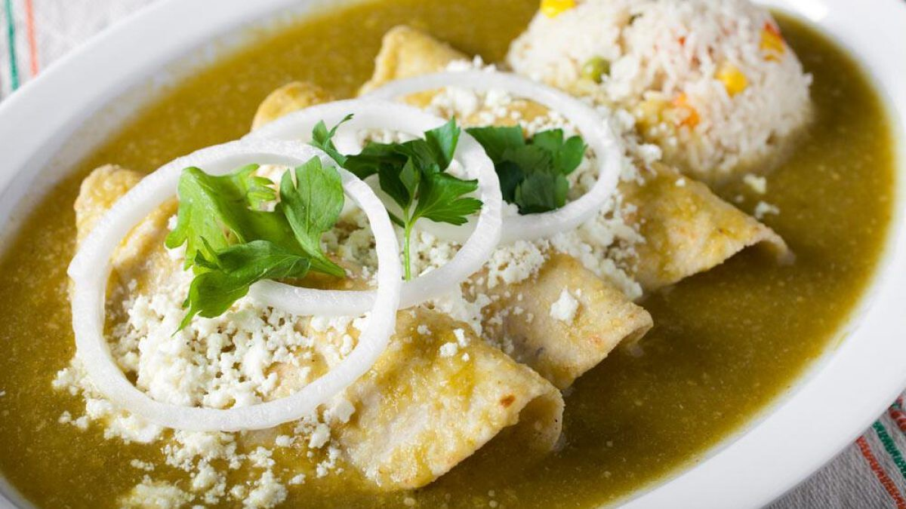

Enchiladas

Las enchiladas son un plato de la gastronomía de México y Centroamérica, en cada país la preparación e ingredientes son diferentes, en México se elabora con tortillas de maíz enrolladas o dobladas y bañadas en alguna salsa picante. Se trata de uno de los platos más populares de México y presentan gran diversidad en las distintas gastronomías regionales del país.
Ingredientes:
- Tortillas
- Tomate
- Cebolla
- Queso
Pasos
- Colocamos en una cacerola los tomates y los chiles con suficiente agua para cubrirlos. Los dejamos hervir a fuego alto por al menos unos 5 minutos, o hasta que los tomates adquieran un color más claro. Procura no hervirlos demasiado tiempo, porque los tomates pueden tornarse amargos.
- Una vez que estén bien hervidos, transferimos los tomates y los chiles a la licuadora con un poco del agua con la que cocimos. También agregamos un cuarto de la cebolla, un diente de ajo, y las hojas de tu medio manojo de cilantro. Licuamos bien.
- Una vez que estén bien hervidos, transferimos los tomates y los chiles a la licuadora con un poco del agua con la que cocimos. También agregamos un cuarto de la cebolla, un diente de ajo, y las hojas de tu medio manojo de cilantro. Licuamos bien.
- En un sartén grande vertimos un poco de aceite vegetal. Que al menos mantenga un centímetro de altura. Calentamos el aceite a fuego alto. En cuanto esté suficientemente caliente, tomamos una tortilla de maiz y la sumergimos en el aceite. La dejamos freír por unos 7 segundos de cada lado, hasta que esté ligeramente dorada. Repite el proceso con el resto de las tortillas de maiz.
- Cortamos el queso en tiras y rellenamos las tortillas con él, doblándolas a la mitad. Transferimos a una sartén (sin aceite) y dejamos que el queso comience a gratinar. Ponemos en un plato nuestras tortillas rellenas de queso, y en cuanto tenga la cantidad de enchiladas deseadas (de tres a cuatro) toma un cucharón y vierte la salsa sobre las tortillas.
- Decora tus enchiladas con unas cuantas cucharadas de crema ácida y un poco de queso doble crema desmoronado. Si gustas, también puedes acompañarla con un poco de cebolla picada y unas cuantas hojitas de perejil o unas rebanadas de aguacate para decorar.